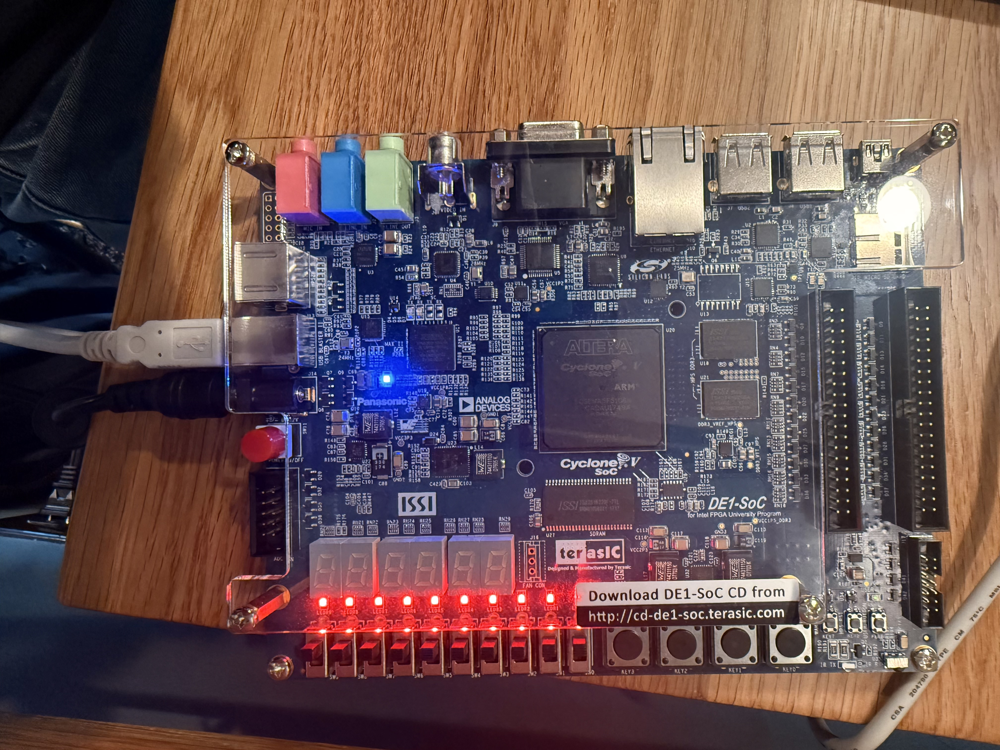
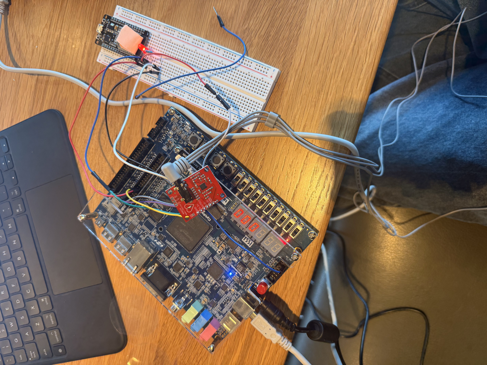
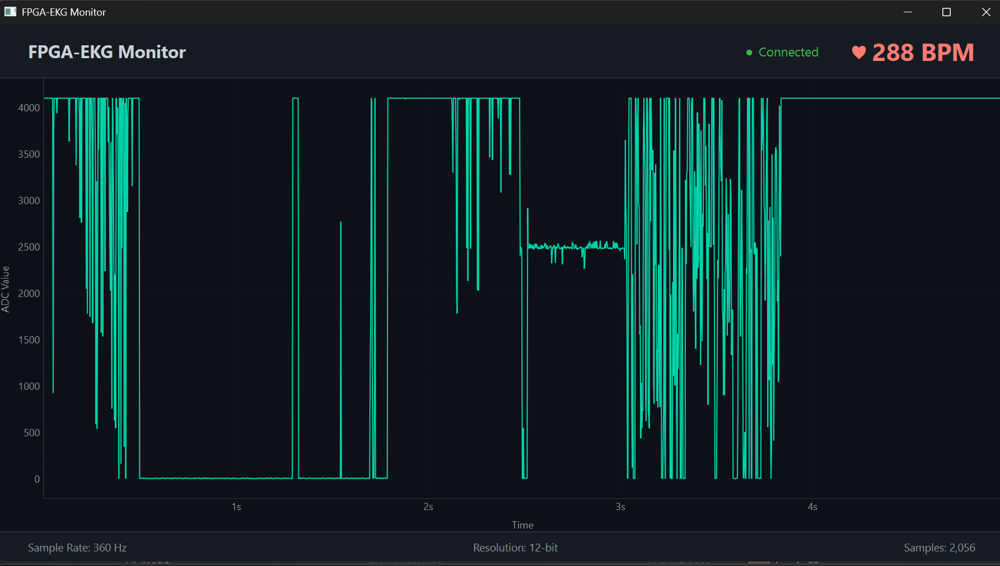

Real-time EKG acquisition & DSP on a Cyclone V FPGA with a Python visualizer for live waveform display and heart rate monitoring.
Lucas Le
Record a 2–3 minute demo video showing: (1) full hardware setup, (2) EKG on HEX displays, (3) Python visualizer with real-time waveform, (4) BPM detection. Upload to YouTube and embed here with an <iframe>.
This project implements a real-time electrocardiogram (EKG) signal acquisition and processing system on an FPGA. Using a Terasic DE1-SoC (Cyclone V) board and a SparkFun AD8232 single-lead heart rate monitor, the system captures analog cardiac signals through the onboard LTC2308 12-bit SAR ADC, processes them through a digital signal processing (DSP) pipeline implemented entirely in VHDL, and streams the processed data to a PC-based Python visualizer for real-time waveform display and heart rate calculation.
Electrocardiogram (EKG/ECG) signals are among the most critical biomedical measurements, providing insight into cardiac rhythm, conduction abnormalities, and overall heart health. Commercial EKG systems rely on specialized mixed-signal ASICs for signal conditioning and DSP. This project explores an alternative approach: using an FPGA to perform the entire digital processing pipeline in hardware, offering deterministic timing, parallelism, and the flexibility to modify the processing chain without hardware changes.
The system is organized into three layers:
Add 1–2 more paragraphs discussing what was most technically challenging, what the final result looks like in practice, and interesting discoveries.
The high-level architecture is shown below:
| Module | Source File | Function |
|---|---|---|
fpga_ekg_top | src/fpga_ekg_top.vhd | Top-level entity, reset/IO routing |
sample_clock | src/sample_clock.vhd | 360 Hz sample tick from 50 MHz clock |
adc_spi_driver | src/adc_spi_driver.vhd | SPI master for LTC2308 ADC |
dc_block | src/dc_block.vhd | DC offset removal filter |
notch_5060 | src/notch_5060.vhd | 50/60 Hz powerline notch filter |
bandpass_fir | src/bandpass_fir.vhd | Bandpass FIR filter (0.5–40 Hz) |
qrs_detect | src/qrs_detect.vhd | QRS complex peak detector |
beat_segmenter | src/beat_segmenter.vhd | Beat-to-beat segmentation |
nn_accel | src/nn_accel.vhd | Neural network accelerator |
result_fifo | src/result_fifo.vhd | Output FIFO buffer |
jtag_streamer | src/jtag_streamer.vhd | JTAG UART data streamer to PC |
view_sig | src/view_sig.vhd | Signal debug/view utility |
The LTC2308 is a 12-bit SAR ADC with SPI. Key parameters: 4096 levels, 0–4.096 V range, 500 ksps max (we use 360 sps). At 360 Hz, the Nyquist frequency is 180 Hz — well above the 40 Hz EKG bandwidth.
For each DSP stage, document: transfer function H(z), filter coefficients, fixed-point format, frequency response plots, and design rationale.
1. DC Blocking Filter
Difference equation, cutoff frequency, implementation.
2. 50/60 Hz Notch Filter
Transfer function, notch depth, Q-factor, IIR vs FIR.
3. Bandpass FIR Filter
Passband, stopband attenuation, taps, window, coefficients.
4. QRS Detection
Algorithm (Pan-Tompkins), threshold logic, refractory period, pseudocode/state machine.
The FPGA uses a synchronous pipeline in a single 50 MHz clock domain:
sample_clock divides 50 MHz → 360 Hz tick.adc_spi_driver for an SPI transaction.dc_block → notch_5060 → bandpass_fir.qrs_detect identifies R-peaks for BPM.jtag_streamer sends samples to PC over JTAG UART.clk / reset_n interface with valid strobes for handshaking.DSP in VHDL (not on the HPS ARM core) was chosen for:
Python handles visualization because PyQtGraph provides real-time plotting and the JTAG UART requires zero additional hardware.
Add additional tradeoffs: fixed-point vs floating-point, filter order vs resource usage, JTAG bandwidth.
The AD8232 connects to the DE1-SoC via the onboard ADC input header and GPIO_0 expansion header.
| AD8232 Pin | DE1-SoC Connection | Notes |
|---|---|---|
| OUTPUT | ADC CH0 input header | Analog EKG → LTC2308 Channel 0 |
| 3.3V | 3.3V on GPIO_0 header | Power supply |
| GND | GND on GPIO_0 header | Common ground |
| AD8232 Pin | FPGA Signal | GPIO_0 Pin | Quartus Pin | Purpose |
|---|---|---|---|---|
| LO+ | GPIO_0[0] | JP1 Pin 1 | PIN_AC18 | Leads-off (+) |
| LO- | GPIO_0[1] | JP1 Pin 2 | PIN_Y17 | Leads-off (−) |
| — | GPIO_0[2] | JP1 Pin 3 | PIN_AD17 | 3.3V Power / Output |
| FPGA Signal | Quartus Pin | Dir | Purpose |
|---|---|---|---|
ADC_CONVST | PIN_AJ4 | Out | Conversion start |
ADC_DIN | PIN_AK4 | Out | SPI config data |
ADC_DOUT | PIN_AK3 | In | SPI result (12-bit) |
ADC_SCLK | PIN_AK2 | Out | SPI clock |
| LED | Function |
|---|---|
LEDR[0] | Heartbeat — 1 Hz blink confirms clock is running |
LEDR[1] | ADC busy |
LEDR[8] | Sample valid flash |
LEDR[9] | Leads-off warning |


The adc_spi_driver implements a bit-banged SPI master for the LTC2308. Triggered by the sample clock, it:
ADC_CONVST high for one clock cycle.ADC_DIN (CH0).ADC_DOUT.sample_valid when the result is ready.For each module (dc_block, notch_5060, bandpass_fir): purpose, VHDL approach (direct-form, transposed), fixed-point widths, simulation waveforms, gotchas.
Algorithm (Pan-Tompkins), state machine, threshold adaptation, refractory period, BPM from R-R intervals, simulation results.
The jtag_streamer uses the Altera JTAG UART megafunction to stream samples over USB-Blaster — no additional hardware needed. Each 12-bit sample is sent as ASCII hex + newline.
Describe framing protocol, flow control, measured throughput, buffer overflow handling.
fpga_ekg_top instantiates all modules:
KEY(0) = active-low async reset.GPIO_0[0:1] = AD8232 leads-off detection.Describe complete data path from ADC → DSP → JTAG, including MUX/bypass switches.
Built with PyQt6 (GUI), PyQtGraph (real-time plotting), and pyserial (JTAG communication). Features: scrolling waveform, real-time BPM, leads-off indicator.
Add: data parsing/buffering strategy, PC-side noise filtering, BPM algorithm, known issues.

Entire section to be written with final measurements, plots, and screenshots.
Paste Quartus compilation report: Logic Elements, Registers, Memory bits, DSP blocks, PLLs.
Fmax, sample-to-output latency, JTAG throughput, timing violations.
Measured vs. reference BPM, accuracy range, failure cases.
2–3 paragraphs: what was achieved, what went well / was difficult, most valuable lessons.
Compare final product against original project plan. What worked, what didn't, what surprised you.
3–5 extensions: multi-lead, NN arrhythmia classification, HPS wireless streaming, beat segmentation, portable design.
Add any additional IP notes — referenced code, tutorials, open-source projects.
Weekly timeline: Week 1 (scaffolding, LED blinker), Week 2 (ADC driver, visualizer v1), Week 3 (testbenches, simulation), Week 4 (DSP filters), …
| Qty | Component | Part # | Source | Cost |
|---|---|---|---|---|
| 1 | Terasic DE1-SoC (Rev F) | P0682 | Terasic | ❌ $___ |
| 1 | SparkFun AD8232 | SEN-12650 | SparkFun | ❌ $___ |
| 1 | Electrode Pad Set (3-lead) | — | ❌ | ❌ $___ |
| 1 | USB Cable (USB-Blaster) | — | Included | $0 |
| — | Jumper wires | — | — | — |
Source files in src/ — testbenches in tb/.
Add references as you consult them: DSP textbooks, FPGA application notes, open-source code, tutorials.
system_block_diagram — Architecture diagramekg_pqrst_labeled — P-QRS-T heartbeat diagramwiring_photo_annotated — AD8232 ↔ DE1-SoC wiringwiring_diagram — Fritzing/draw.io wiring guidehex_display_adc_readout — HEX display photoadc_driver_state_machine — SPI driver FSMspi_timing_waveform — ModelSim SPI conversiondc_block_sim_waveform — DC block simulationnotch_sim_waveform — Notch filter simulationbandpass_sim_waveform — Bandpass FIR simulationdsp_pipeline_full_sim — Full pipelineqrs_detection_sim — QRS R-peak detectiondc/notch/bandpass_freq_response — Frequency response plotsqrs_state_machine — QRS FSM diagramjtag_data_format — Byte framingfull_setup_with_electrodes — End-to-end setupvisualizer_final_screenshot — Final visualizervisualizer_leads_off — Leads-off statertl_viewer_top — Quartus RTL Viewerpipeline_timing_diagram — Pipeline timinghardware_schematic for Appendix B